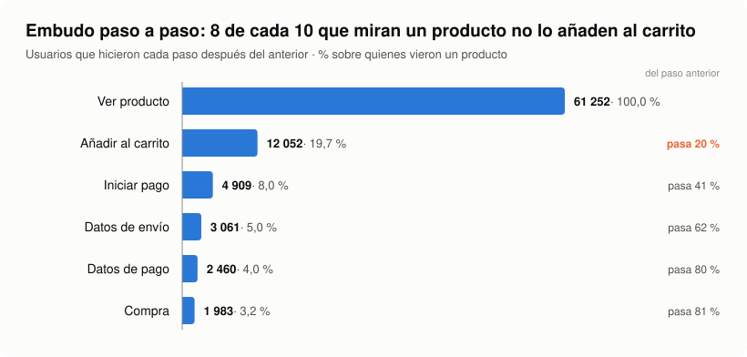
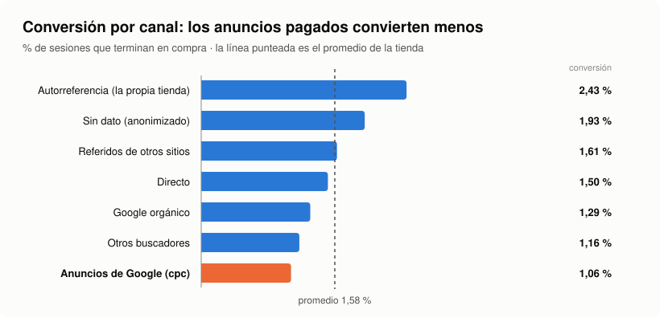
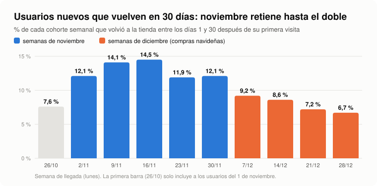

Informe ejecutivo · Google Analytics 4 · nov 2020 – ene 2021
¿Qué canales traen clientes que sí compran?
Jose Manuel Güere Casas Analista de Datos & BI jguere2811.github.io
En una línea: la tienda pierde a sus clientes antes del carrito, no en el pago: 8 de cada 10 personas que ven un producto no lo añaden. Los anuncios de Google son el canal que peor convierte, y los compradores de diciembre casi no vuelven.
Sesiones360 129
Compras5 692
Conversión1,58 %
IngresosUSD 362 mil
Vuelven en 30 días10,7 %

Embudo por usuario: cada paso cuenta solo a quien completó el anterior.

Conversión por canal; la línea punteada es el promedio de la tienda.
Hallazgos
La mayor fuga está en la página de producto: solo el 19,7 % añade al carrito. Ya en el pago, 8 de cada 10 completan cada paso.
Google Ads convierte 1,06 %, un tercio menos que el promedio, y tiene el ticket más bajo (USD 54,6).
El celular trae el 40 % de las visitas y convierte igual o mejor que la computadora (1,64 % frente a 1,54 %).
Solo el 10,7 % de los usuarios nuevos vuelve en 30 días; los de diciembre, compradores de regalos, apenas el 8 %.
El 8 % de las sesiones son autorreferencias: un error de medición que le quita el crédito a los canales reales.
Recomendaciones
Mejorar la página de producto (fotos, precio y costo de envío visibles) antes de tocar el proceso de pago.
Revisar las campañas de Google Ads (palabras clave y páginas de destino) antes de subir el presupuesto.
Diseñar pensando primero en el celular, ya que es casi la mitad del tráfico.
Campaña de correo en enero para los compradores de diciembre, la cohorte que menos vuelve.
Corregir la configuración de GA4 (exclusión de referencias propias) para medir bien cada canal.
Participación en las sesiones y conversión por dispositivo.

% de usuarios nuevos de cada semana que vuelve en 30 días.
Método y limitaciones
Consultas SQL en BigQuery sobre el dataset público ga4_obfuscated_sample_ecommerce (Google Merchandise Store): embudo secuencial por usuario, comparación de canales y dispositivos, y cohortes semanales de retención. Los datos están ofuscados por Google; el canal es el de adquisición del usuario (primera visita), y el dataset no incluye el gasto publicitario, por lo que no se calcula el retorno de la inversión.